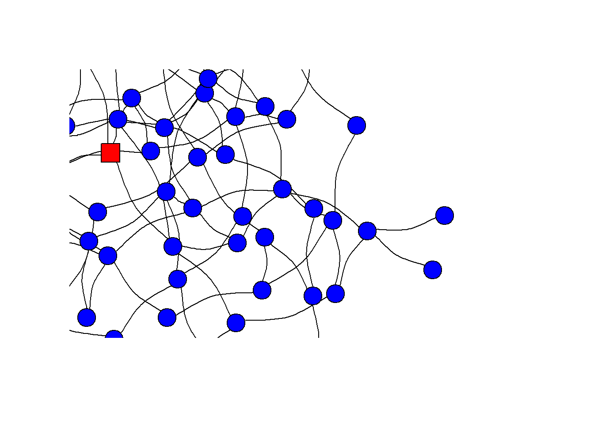

Chapter 1 Introduction
1.1 Overview
Sociologists study how societies affect the lives of their members and, vice versa, how individuals shape the societies in which they live. Within societies people form and break relations with specific others and thereby form social networks.
Individuals are embedded in many different social networks (e.g. based on friendships, bullying, family relations, coworking, and so forth). Within these social networks individuals influence each others’ attitudes, behaviors and relations via complex and dynamic processes. The attitudes, behaviors and relations of individuals shape, in turn, the societies they live in. They give rise to social phenomena, the collective outcomes caused by human behavior such as inequality, segregation, polarization and cohesion. It is difficult to explain macro-level social phenomena, let alone to solve many of the urgent social problems, without taking into account social networks. For example, researchers may be able to deduce hypotheses from an established theory on political opinions of individuals but the same theory is not able to explain when and where political polarization in a society occurs.1 To explain when and where political polarization occurs, we need the analytical toolbox of the social network perspective. It is thus unsurprising that the study of the causes and consequences of social networks lies at the core of sociology. Nor is it a surprise that the social network perspective now populates many other disciplines too – from computer science, to physics, to organization science.
A social network is an finite set of actors and the relation(s) defined on this set. The actors are social entities (people, organizations, countries, etc.) whose specific ties (friendship, competition, collaboration, etc.), constitute the network. (Wasserman and Faust 1994 : 20).
Networks are also called graphs or sociograms.
Actors are also called points, nodes, agents or vertices.
Relations are also called ties, edges or connections.
Social Networks is/are no theory nor a method. Social networks are social phenomena with causes and consequences. The size, composition, structure, and evolution of social networks can be explained. Social networks have an impact on individuals (e.g. attitudes and behavior), dyads (e.g. relations), institutions (e.g. operational efficiency) and societies (e.g. inequality, segregation, or polarization). In other words, acknowledging the dynamics of social networks is crucial to correctly explain social phenomena and understand (and solve) social problems. The social network perspective is a systematic way of thinking to do so.
1.3 Aim
The intended learning outcomes of the course are:
- Theoretical knowledge and insight:
- you will be able to define core concepts related to a social network perspective.
- You will be able to summarize what a social network perspective in social science research entails.
- you will be able to define core concepts related to a social network perspective.
- Academic attitude:
- you develop a positive attitude towards applying a social network perspective in social science research.
- you develop a positive attitude towards applying a social network perspective in social science research.
- Research skills: you will be able to apply a social network perspective in social science research. This encompasses that:
- you will be able to deduce relevant and new social network hypotheses from existing theories.
- you will be able able to collect and wrangle social network data.
- you will be able to test these hypotheses with different social network analysis techniques.
- you will be able to deduce relevant and new social network hypotheses from existing theories.
1.4 Structure
This course is structured along three different dimensions:
- Type of Social Network: dyad, egonet, socionet (complete network)
- Causes or Consequences of social networks
- Implications of applying a social network perspective: Theoretical, Data and Methodological
| Type of Social Network | Causes or Consequences | Implications |
|---|---|---|
| Dyads | Causes | Theory |
| Dyads | Causes | Method |
| Dyads | Consequences | Theory |
| Dyads | Consequences | Method |
| Dyads | NA | Data |
| Egonets | Causes | Theory |
| Egonets | Causes | Method |
| Egonets | Consequences | Theory |
| Egonets | Consequences | Method |
| Egonets | NA | Data |
| Socionet | Causes | Theory |
| Socionet | Causes | Method |
| Socionet | Consequences | Theory |
| Socionet | Consequences | Method |
| Socionet | NA | Data |
Feel free to use the menu on the left and to jump to the section you are most interested in. But there is a clear order in the sections. The best way to accumulate theoretical and methodological knowledge, and to gain the necessary R-skills to successfully apply a social network perspective to your own research is by going through the sections one by.
Below I will discuss three dimensions in a little bit more detail.
1.4.1 Type of Social Network
Dyads
The smallest possible social network is a network between two persons (or, more precisely, between two social agents). A network between two persons is also called a dyad. In the clip below I will introduce you to the the main concepts involved in a dyad. Naturally, the same concepts also play a role in larger social networks.
For slides, see here.
After having watched the video you should be able to:
- give a definition of a dyad.
- explain what is meant by time-varying and time-constant actor attributes and dyad attributes.
- explain that relations between ego and alter can be classified based on whether relations are directed or undirected and on the level of measurement of the relation (i.e. nominal, ordinal, interval, ratio).
- be familiar with al the synonyms for networks, agents and relations.
- provide examples of dyads, and the relations between ego and alter.
Egonets
We could define an egocentric social network as a set of actors that all have relationships with ego. This definition is quite similar to Marsden’s (Marsden 1990) definition: “Sets of ties surrounding sampled individual units.” To illustrate what is meant by these definitions, let us us consider the following ‘world.’ And visualize the best-friend-forever relationships in this world.

And now sample a random person. The person we sampled, ego, is made red and square in our network.
Let us zoom in a little bit.

1.0 degree
Let’s suppose we had asked this person to name all its best-friend-forevers (BFFs). If we would assume that BFF relations are undirected, then this person’s egocentric or 1.0 degree network would look like this:
The alters with whom ego is not connected are not part of the egocentric network. And generally, if we collect data we do not have any information on these unconnected alters.
1.5 degree network
We may have asked ego - with the question below - whether its BFFs are also BFFs of one another.
Please think about the relations between the people you just mentioned. Some of them may be total strangers in the sense that they wouldn’t recognize each other if they bumped into each other on the street. Others may be especially close, as close or closer to each other as they are to you. Are they especially close? PROBE: As close or closer to each other as they are to you?
It turns out that two alters in ego’s BFF-network are also BFFs of each other. If we know the relations between the alters in a 1.0 degree network it becomes a 1.5 degree network. See below:

In the lower-left corner we see a closed Triad. For more information on Triads jump to this section @(triad).
2.0 degree network
Perhaps, instead of asking whether there are BFF relations between the BFFs of ego, we could also have used a snowball sampling method and interviewed the alters (or BFFs) of ego. Note that the focal actor (initial sampled unit) remains ego.
Thus, if we would have asked ego’s alters to name their BFFs, we would have discovered the following 2.0 degree network:
The newly discovered alters are in light blue. Naturally, we also observe the BFF relation between ego’s alters appearing. Please note that in a 2.0 degree network the number of alters within the 1.0 degree network of ego will remain the same (assuming that ego did not forget to mention a BFF).
2.X degree network
Any ideas about what a 2.5 degree network would look like. To be honest, I don’t. Do these networks include all relations between all nodes, or only the relations between the alters in the separate 1.0 degree networks? Perhaps we could call the latter a 2.5 degree network and the former a 2.75 degree network.
Socionets
A complete, full, or sociocentric network is a network within a sampled context or foci of which we know all nodes and all connections between nodes. The boundaries of the network are thus a priori defined and the contexts in which nodes are present are the sampled units. We may for example sample a classroom, neighborhood, university or country and collect all relations between all nodes within this context.
You now have come across a general definition for social networks and specific definitions for dyadic, egocentric and sociocentric social networks. You also know that the social agents within the networks may not necessarily have to be persons but can also be companies, or political parties for example. A network in which the relations between two different type of nodes are present are called multiple-mode networks.
Similarly, between one type of node (e.g. persons) we may have information on more than one type of relation. These networks are called multiplex networks.
The networks we have considered so far refer to networks of binary relations (yes/no). If the relations can vary in strength, we call the networks a weighted network.
Thus, we can have a two-mode, multiplex, weighted, directed network but also a single-mode, uniplex, binary, undirected network.
It turns out that many (complete) social networks share certain network characteristics. This is called the small-world phenomena and is discussed in more detail here. But let us start with a teaser. Suppose we live in a world, called “Smallworld,” of 105 persons (a small world indeed) and have information on all friendship (or trust) relations between its citizens. How could such a network look like? It turns out that (large) social networks of positive relations often have a specific structure. And this structure is called A Small World. Lets have a look at the small world structure of SmallWorld.
Play with the small world network of Smallworld. Zoom in and out, turn it around and click on some nodes. How would you describe the structure of the network in Smallworld. Well, I would describe it as a network with a: (1) relatively low density; (2) relatively high degree of clustering and (3) a relatively low average degree of separation (or path length). These three characteristics are defining features of small world networks. But what does density, clustering and path length mean?, and what do we mean with ‘relatively,’ that does not sound very scientific does it?! Don’t you worry, you will learn this during the course.
1.4.2 Causes and Consequences
…or Selection and Influence
Social networks consist of social relations between people. For example friendships, bullying relations or working-together-during-the-course-social-networks relations.
The continuous process of making and breaking social relations is also called selection. And the reasons why we make and brake relations with specific persons are important causes for the structures of the social networks we observe. Thus the causes of social networks are strongly related to selection processes.
The people with whom we form social relations also influence our attitudes, behaviors and future relations. How we think, behave and with whom we make, break or maintain social relations is for an important part the consequence of the social networks in which we are embedded. Thus the consequences of social networks are strongly related to influence processes (but also to selection processes).
Selection and influence processes are firmly entangled. See below for an example.
- The shapes represent social agents (e.g. individuals).
- The shape (circle or square) of the social agent is a time-stable characteristic (e.g. sex).
- The fill of the shape (no fill, pattern fill, solid fill) is a time-varying characteristic (e.g. music taste).
- The line between the shapes (no line, dashed, solid) signifies the strength of the relationship (e.g. romantic relationship)
We could call the selection process ‘Opposite Attracts’ and we could call the influence process ‘Circle beats square.’ Let us focus on the selection process first. If there is no tie between the agents, you will notice that a tie will be formed (becomes stronger) between dissimilar agents. When a tie is present between agents, you will notice that a tie will be broken (becomes weaker) when agents are similar with respect to their time-varying characteristic. Let us now focus on the influence process. When a strong tie is present, you will notice that the square agents will assimilate to the time-varying characteristic of the circle agents. We do not know of course the mechanism behind this assimilation (or influence) process. Is it the square who (voluntary) adopts the behavior of the circle or does the circle forces the square to follow suit?
1.4.3 Implications
Individuals - or social agents more generally (e.g. institutions, societies) - are part of many different social networks.
1.4.3.1 Theoretical implications
A social network perspective may force to a rethinking of existing hypotheses and may lead to new research questions on the causes and consequences of social networks. That individuals are interconnected and hence that observations are (cor)related and characteristics of these observations co-vary is theoretically interesting.
It gives rise to a complete new type of research questions. Where normally our research questions refer to describing or explaining the variance between individuals (e.g. why individuals differ) a new set of research questions describe, compare and explain the covariance between individuals. For example, why connected people are more (dis)similar to one another than non-connected others. The social network functions as explanans in these questions.
A different set of new research questions takes the social network itself as explanandum. These research questions aim to describe, compare and explain characteristics of social networks (e.g. with respect to size, composition, structure and evolution).
1.4.3.2 Methodological implications
That individuals are interconnected and hence that observations are not independent can be seen as a nuisance. That our observations are not independent violates many assumptions of analysis techniques that social scientists commonly apply (e.g. OLS). In order to correctly estimate the effects of interest we need to take these interdependencies into account with social network analysis techniques.
1.4.3.3 Data implications
If we want to collect data on social networks, we need not only information on specific focal social agents (egos) but also on its relations with other egos (ego’s alters) and information on characteristics of these alters. Is it ethical that we collect data on an alter via ego? What do we do if in a school class a pupil does not wish to participate in a study on bullying? Do we delete this child from our bullying networks altogether, thus both as sender and receiver of bullying relations? Collecting data on social networks gives rise to specific ethical issues.
If we want to collect data on complete social networks, the sampling unit is no longer an individual but the context in which these ties occur. How do we determine the boundaries of this context and how do we sample these. Collecting network data comes with specific sampling issues.
Network data also has a specific format (e.g. an adjacency matrix) and can become very big. How to wrangle these network data objects? Network data oftentimes lead to specific practical data wrangling issues.
1.5 What makes this course stand out?
This course is not an introduction to Sociology, Social Networks or Social Network Analysis. It is also not a course in R. I assume you have some intuitive understanding of what social networks are and have opened R or RStudio at one point in your life but both are not necessary prerequisites to follow this course. There are very good (online) introductions to the study of Social Networks, see for example here and here. A good short introduction to R for this course can be found in Appendix ?? or have a look here for a more thorough introduction to Data Science with R.
This course is tailored for research master and PhD students. I will assume that you are interested in and have studied social problems in your academic career and that your research interests fits one of the following broad themes: inequality, cohesion and diversity. For an excellent introduction into sociology see (Van Tubergen 2020). However, up to this point, when you deduced hypotheses from existing theories you did not explicitly acknowledge that individuals are interconnected in social networks. You were neither aware that this may have theoretical consequences for existing hypotheses nor that this gives rise to new research questions. Up to this point, when you tested your hypotheses you assumed that your observations were independent (e.g. OLS) or, at most, that the nonindependence was relatively easy to take into account (e.g. multi-level analysis).
In this course you will learn to apply a social network perspective in the study of inequality, cohesion and diversity. You will become able to deduce more precise and new hypotheses. You will become able to test these hypotheses with social network techniques that take into account and explain complex interdependencies.
Enjoy!!
1.6 Assignment
Time to practice.
You will make this assignment twice. The first time at the very beginning of the course and the second time at the very end.
- Go back to your latest paper, assignment or theses in which you investigated a research topic fitting the broad research themes of inequality, cohesion and diversity. You could also take one of your current projects you are working on if you like. Identify the social problem.
- Please describe what a naive approach would be to take on this social problem. Thus, being oblivious of a social network perspective.
- Please try to identify how your project could be improved by taking a social network perspective. Make sure to discuss the theoretical, data, and methodological consequences.
- Can you discover a trend in the existing literature with respect to taking a social network perspective.
Prepare a short presentation (5-10 minutes) for the next class.
But dear sir, I have not worked on any social problems in my academic career so far. Well, are you sure you want to follow this course? Yes, really? Okay. Start from scratch then. Formulate a research question related to a social problem and start from there.
1.7 Network structures (DYAD)
1.8 Causes of dyads
1.8.1 General Theoretical Framework
1.8.3 The special role of restrictions
1.8.4 Theory of Action
1.8.5 Transformation rules
1.8.6 Agent Based Modelling
1.9 Consequences of dyads
1.9.1 Homophily
1.9.2 Influence mechanisms
1.9.3 Polarization
1.10 Assignment
References
Polarization is a social problem - a social phenomenon which people consider undesired - and a society is said to be polarized when (sizeable) (and clearly distinguishable) groups in society hold (ever more) opposing, extreme (political) attitudes.↩︎
1.2 Social Network Perspective
It is the acknowledgment that agents are embedded within social networks – no man is an island – and that this has theoretical, data, and methodological consequences. It systematically integrates theory, data, and methods according to this acknowledgment – i.e. wielding the full analytical toolbox pertaining to social networks – to rigorously explain social phenomona and social problems.
In sum, taking a social network perspective leads to key theoretical, data collection, and methodological contributions. The combination and integration of these three allows for a better understanding of social phenomena and society.